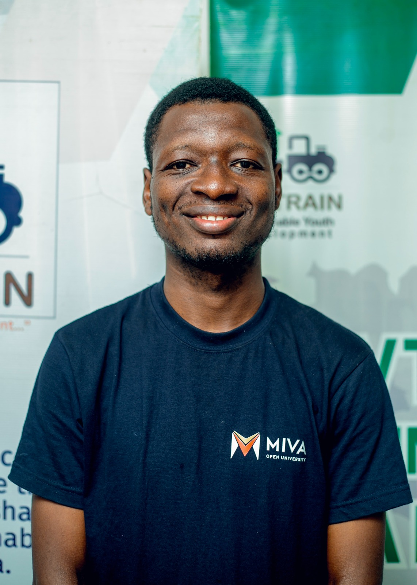

Jehoiada Enyinyigocho Abu

Hello, and welcome! I'm Abu Jehoiada, a Software Engineering student at Miva Open University, passionate about technology, creativity, innovation, and problem-solving.
Brief Biography
Abu Jehoiada is a Software Engineering student at Miva Open University, passionate about technology, creativity, problem-solving, and innovation. He is on a journey of developing the technical knowledge and practical skills required to design, build, and maintain software solutions that address real-world challenges. With an appreciation for both technology and creative expression, he takes an interest in how digital tools and innovative ideas can be transformed into meaningful solutions. He values continuous learning, attention to detail, effective communication, and the pursuit of excellence. His interest in software engineering reflects a desire to understand the technology shaping the modern world and to contribute to its development through creativity, logical thinking, and technical expertise.